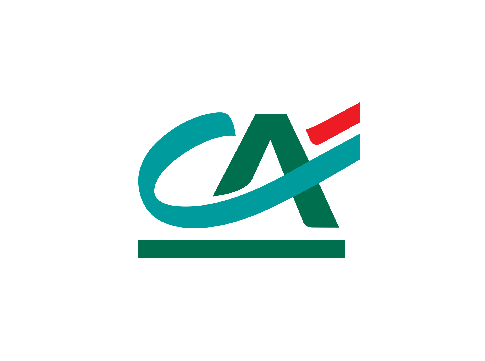

Stagiaire Conseiller-Accueil

Missions principales
- Accueil physique & téléphonique : gestion des clients, opérations courantes, prise de RDV, orientation et accompagnement personnalisé.
- Participation à des rendez-vous clients : épargne, prêts, comptes, découverte des besoins, suivi de la relation.
- Mise à jour des données clients (KYC) : saisie, vérif., scan des données, lutte anti-fraude réglementaire.
- Projet "Café Digital" : échange et démonstration d’outils numériques, conseil sur les fonctionnalités de l’espace client, promotion de l’application mobile.
- Proposition commerciales : rebonds sur besoins, proposition de RDV.
Compétences comportementales
Aisance relationnelle
Adaptabilité
Gestion & posture professionnelle
Ce que j’en retiens
Ce stage m’a permis de gagner en confiance, d’affiner mon projet professionnel et de confirmer mon intérêt pour le secteur bancaire.
J’ai apprécié la diversité des missions, l’autonomie accordée et l’ambiance de l’équipe.